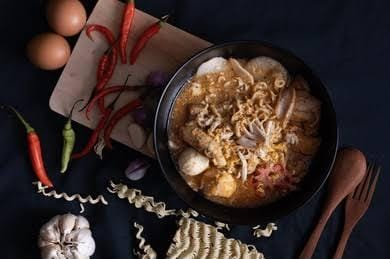

Welcome to Gourmet Haven
Your destination for exquisite dining experiences and exceptional culinary creations.
Our Story
Founded in 2010, Gourmet Haven has been dedicated to providing memorable dining experiences by combining fresh ingredients, innovative recipes, and outstanding service. Our restaurant is built on a passion for food and a commitment to excellence.
Meet the Team
Our team is composed of experienced chefs, friendly servers, and passionate individuals who share a love for great food and hospitality. Every dish we serve is a reflection of our dedication to culinary artistry.
Our Values
- Fresh Ingredients: We source the finest, freshest ingredients to ensure top-quality dishes.
- Innovation: We embrace creativity to offer unique and flavorful dining experiences.
- Community: We strive to build connections and give back to the community that supports us.
Gallery
Take a look at some of our signature dishes and the ambiance of Gourmet Haven.
